HireMind · Thiết kế giao diện
Các màn hình chính
Từ nộp CV trong vô vọng → biết trước tỷ lệ được gọi phỏng vấn. 13 màn hình: landing, wizard, dashboard 7 tab, dark mode & mobile.
Dành cho ban giám khảo
1 · Landing & Wizard
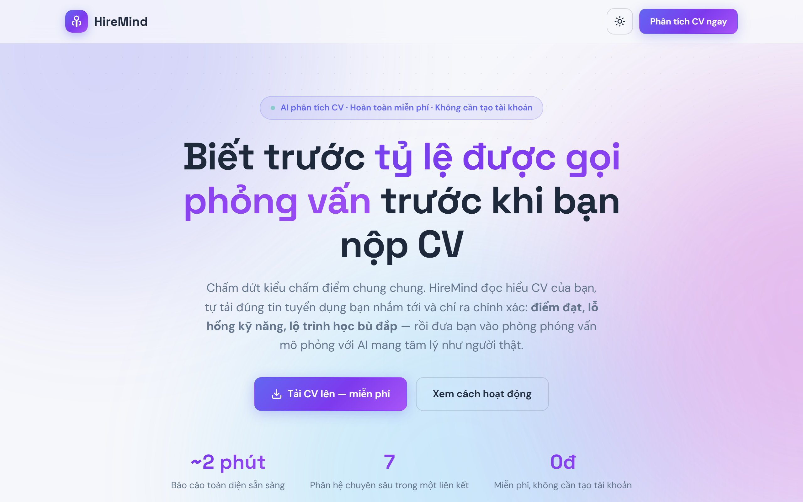
Landing — hero + phân tích CV miễn phí
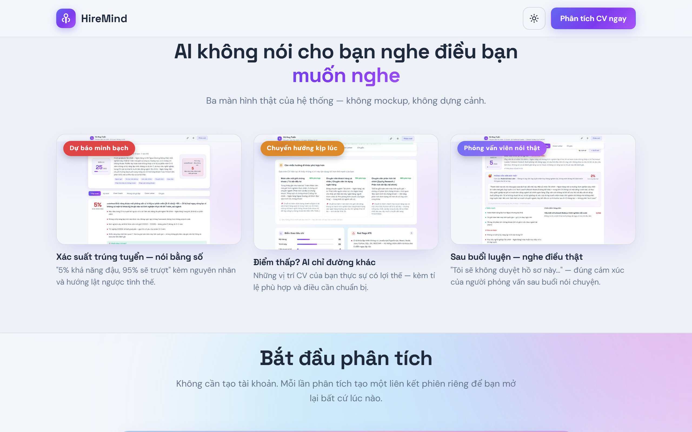
Landing — tính năng & điểm khác biệt
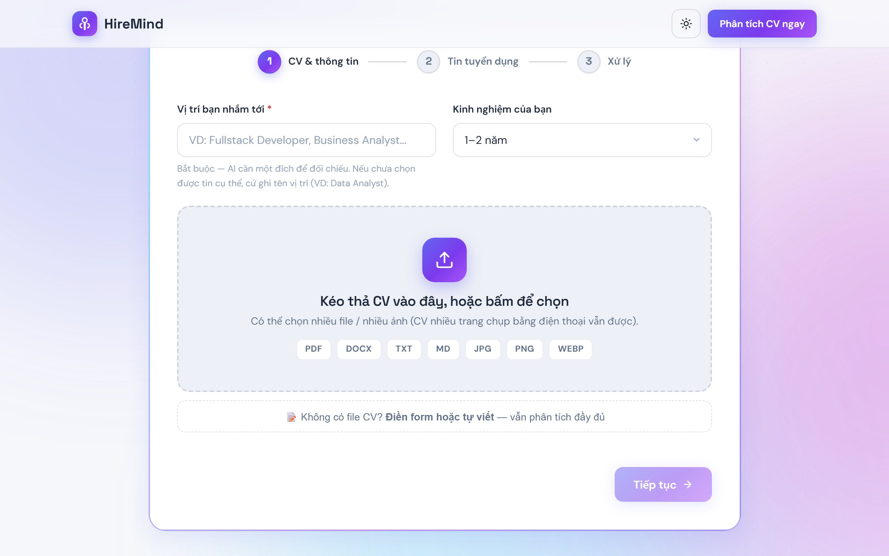
Wizard — tải CV, dán link JD, nhập chí tiêu
2 · Dashboard phiên phân tích (7 tab)
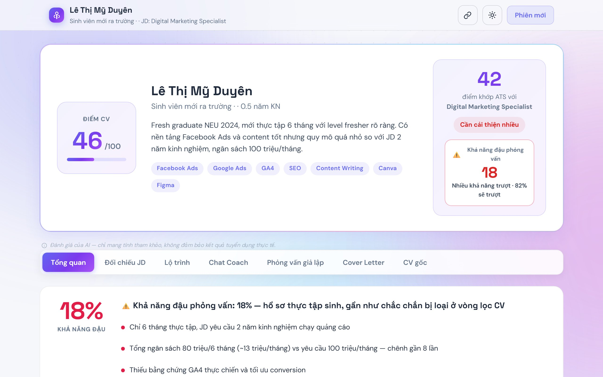
Tổng quan — tỷ lệ được gọi phỏng vấn
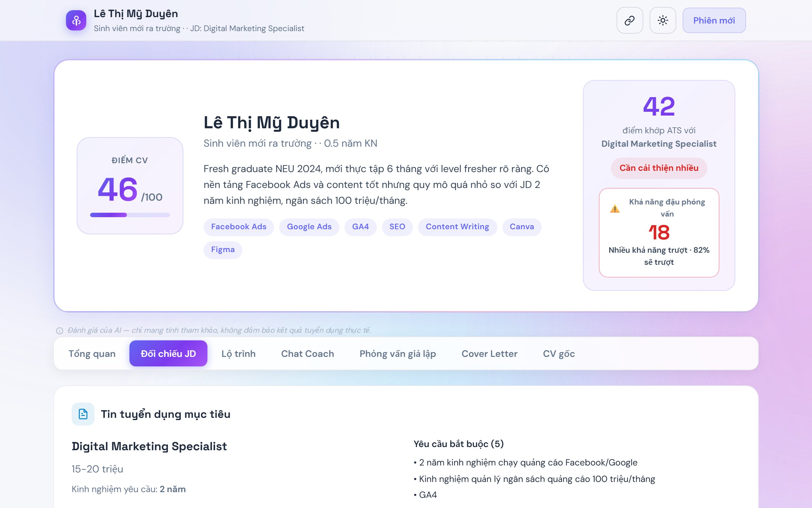
Đối chiếu JD — từng yêu cầu có bằng chứng
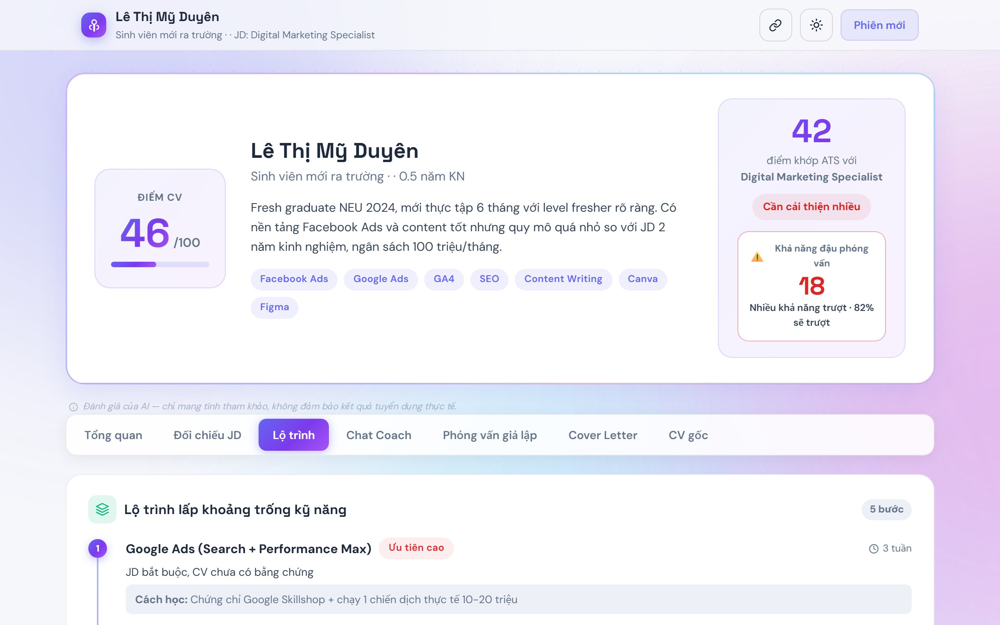
Lộ trình 6 bước bù đắp lỗ hổng
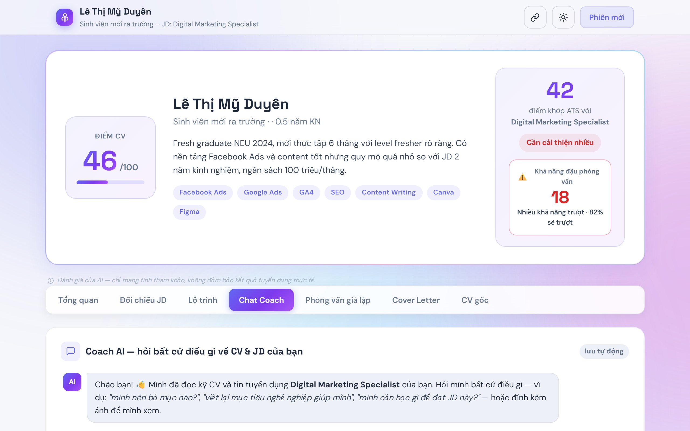
Chat Coach — hỏi đáp kèm ảnh CV
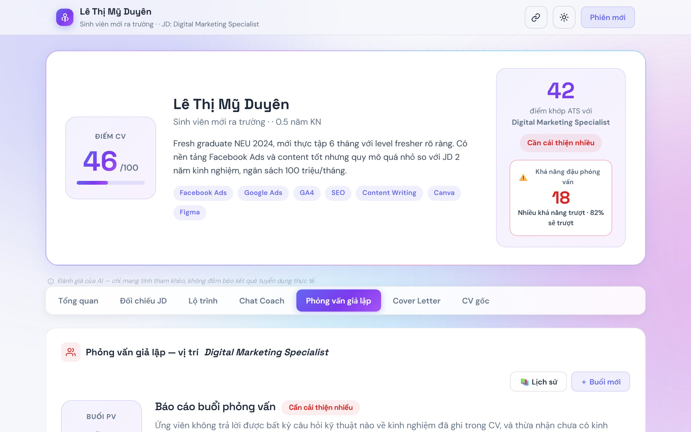
Phỏng vấn giả lập — mô phỏng tâm lý + báo cáo
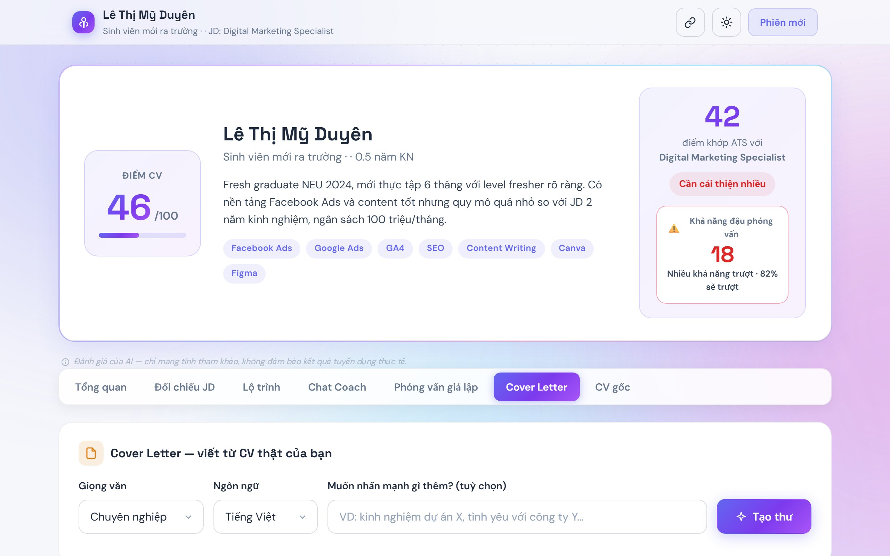
Cover Letter — thư giới hạn theo JD
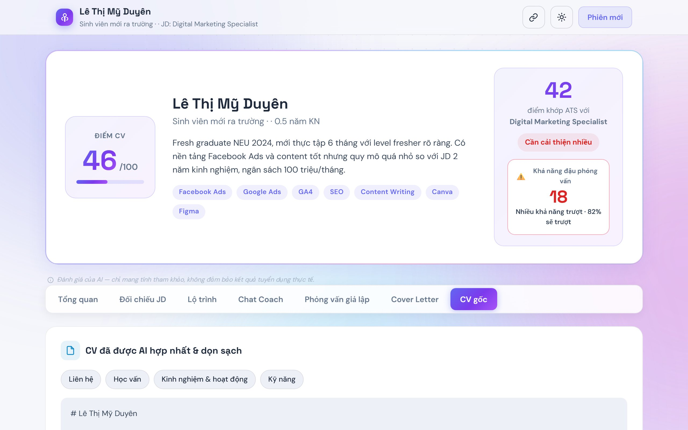
CV gốc — xem lại hồ sơ đã tải
3 · Dark mode
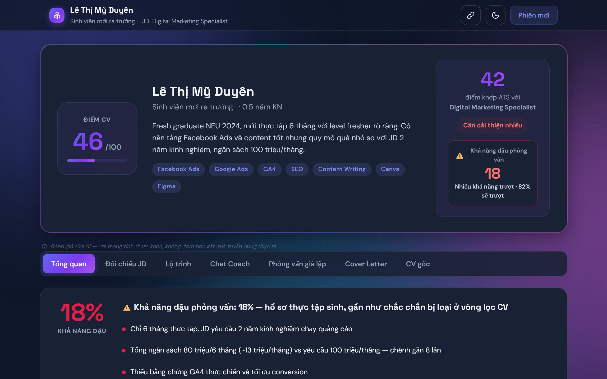
Dark mode toàn giao diện
4 · Mobile (390px)
Mobile — landing
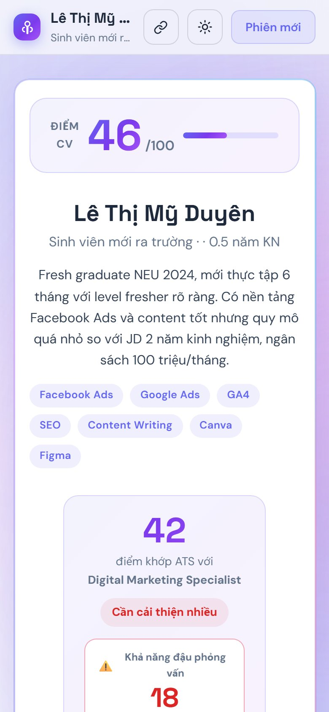
Mobile — dashboard